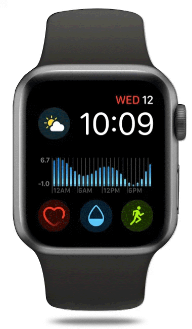

February 2020
WASH is a smart watch app that uses auto-tracking and reminders to help users develop healthy
hand-washing habits. My team designed this app from scratch February of 2020, just as COVID-19
appeared in the U.S.. In light of the worldwide circumstances, we wanted to design an app that
would help alleviate some of the stress and anxiety that comes with catching a virus.
In this research project, I acted as a UX researcher as well as a UX designer. Our team
brainstormed ideas to come up with an app from scratch that would be desirable in our
current society. From our research, we discovered that most people were thinking about
COVID-19 and how to protect themselves against it.
Because we wanted to design an app that would be marketable in the longterm, we conducted some user research to see how we could consolidate our ideas addressing current public concern for COVID-19 and how they could be generalized to all future health concerns.
How might we use informative content to make users feel confident
they’re doing everything they can to protect themselves from the coronavirus outbreak?
This was our value proposition statement.
To reiterate, the problem is that people want to feel more informed.
People need to take actions to feel in control because uncertainty is the causing factor
for their anxiety, but they don’t know what actions to take.
We asked ourselves “How can we surface information that will combat that anxiety”
Through our usability testing, we found out that our users had trouble with the fact that the handwashing was automatically tracked and on what the droplet represented, so in our hi-fidelity prototype we made sure to address that issue by further explaining it in our onboarding process.
Since we explained further about the droplet in the onboarding of the final prototype, our users could now rely on push notification reminders and the watchface to know when to wash their hands.
